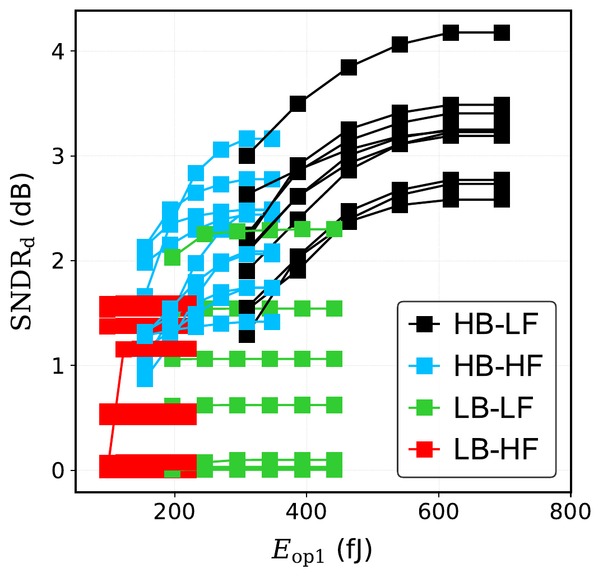
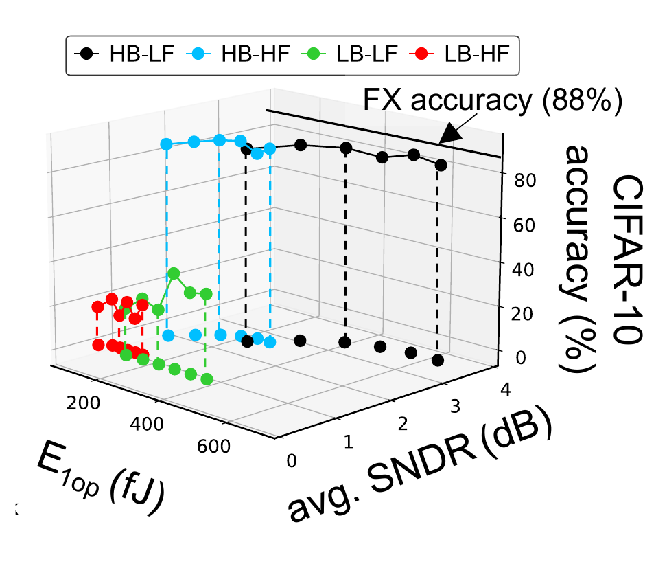
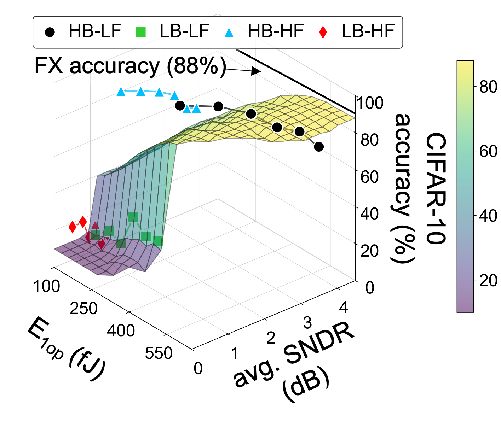

Use SNDR to connect non-idealities and operating conditions to network behavior.
03 · THE EAS TRADE-OFF
Every operating point changes more than one outcome.
Compute SNDR connects energy and accuracy to security vulnerability. Lower-SNDR conditions can suppress model extraction, but they also reduce useful inference fidelity. Higher-fidelity technologies therefore need stronger defenses.


TECHNOLOGY EXPLORER
Compare the modeled attack surface.
Choose a device family to see how the TCAD analysis connects conductance behavior, compute fidelity, and extraction exposure.
MRAM · MEASURED + MODELED
Lower conductance contrast limits compute SNDR.
The measured prototype shows that lower-SNDR settings reduce attack efficacy, but also move the system away from fixed-point inference accuracy.
- Compute-fidelity tendency
- Lower
- MEA exposure in the study
- Lower than ReRAM and FeFET
- Evidence
- Measured chip + behavioral model

DESIGN DIRECTION
Do not optimize the three axes independently.
Test query-based attacks at the operating points selected for energy and accuracy.
Combine circuit choices with algorithmic methods such as SEC and noise-aware training.